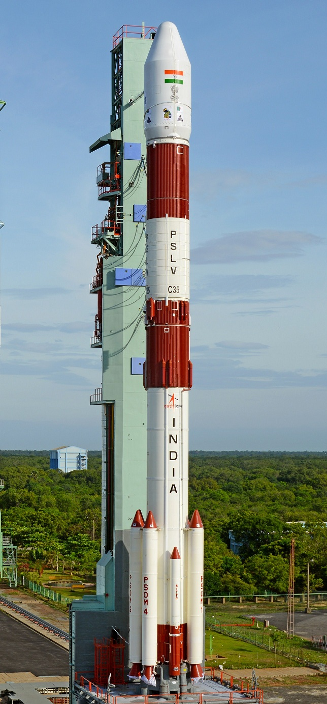
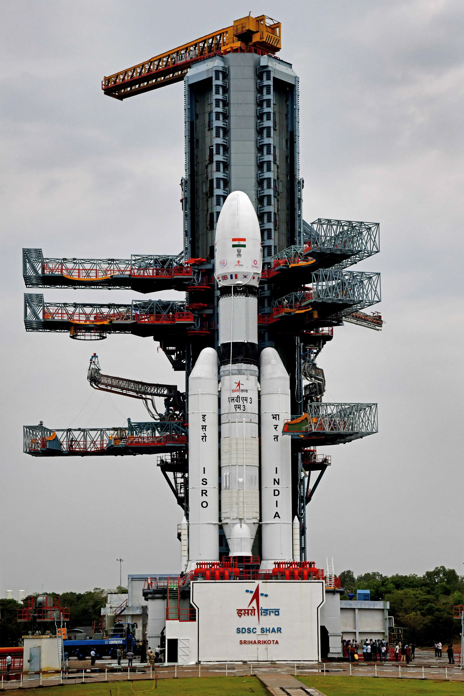

| Name | Image | Agency | Description |
|---|---|---|---|
| PSLV |
 |
ISRO | Polar Satellite Launch Vehicle (PSLV) is the third generation launch vehicle of India. It is the first Indian launch vehicle to be equipped with liquid stages. After its first successful launch in October 1994, PSLV emerged as a reliable and versatile workhorse launch vehicle of India. The vehicle has launched numerous Indian and foreign customer satellites. Besides, the vehicle successfully launched two spacecraft "Chandrayaan-1 in 2008 and Mars Orbiter Spacecraft in 2013"that later travelled to Moon and Mars respectively. Chandrayaan-1 and MOM were feathers in the hat of PSLV. |
| GSLV |  |
ISRO | Geosynchronous Satellite Launch Vehicle Mark II (GSLV Mk II) is the launch vehicle developed by India, to launch communication satellites in geo transfer orbit using cryogenic third stage. Initially Russian GK supplied cryogenic stages were used. Later cryogenic stage was indigenously developed and inducted in Jan 2014 from GSLV D5 onwards. This operational fourth generation launch vehicle is a three stage vehicle with four liquid strap-ons. The flight proven indigenously developed Cryogenic Upper Stage (CUS), forms the third stage of GSLV Mk II. From January 2014, the vehicle has achieved six consecutive successes |